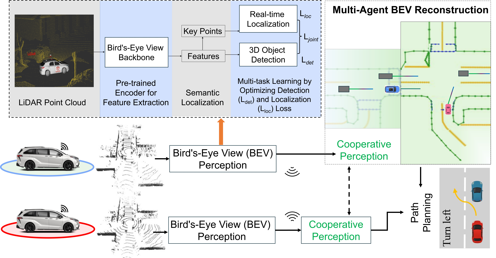

Toyota Motor North America, InfoTech Labs
Real-world closed-loop deployment of CooperDrive in occlusion-heavy and non-line-of-sight intersection scenarios. Compared with ego-only perception, cooperative perception enables earlier hazard awareness and safer path planning decisions.

Reconstructed Bird’s-Eye View (BEV) representation generated through cooperative perception, where each vehicle contributes precise localization and detection outputs from our proposed Multi-task BEV Perception Network to enhance situational awareness and support safer path planning.
A shared BEV backbone jointly supports 3D object detection and localization in one efficient perception pipeline.
CooperDrive exchanges compact object-level results instead of raw sensor data or BEV features, making communication practical for real vehicles.
Cooperative perception directly improves downstream planning by revealing occluded hazards earlier, without changing the existing planner architecture.
The framework is validated through real-vehicle closed-loop tests in occlusion-heavy and NLOS intersections, demonstrating practical safety gains under strict communication constraints.
| Method | TTCmin (s) ↑ | DRAC (m/s²) ↓ | DCZ (m) ↑ | VR (%) ↓ |
|---|---|---|---|---|
| Ego-only | 2.05 | 0.312 | 2.01 | 18 |
| CooperDrive | 6.62 | 0.060 | 4.12 | 2 |
| Improvement | +4.57 | -0.252 | +2.11 | -16 |
Across all tested scenarios, cooperative perception improves safety margin and enables earlier, less aggressive planning maneuvers.
Metric definitions.
If you find CooperDrive useful in your research, please consider citing our paper:
@inproceedings{qu2026cooperdrive,
title = {CooperDrive: Enhancing Driving Decisions Through Cooperative Perception},
author = {Deyuan Qu and Qi Chen and Takayuki Shimizu and Onur Altintas},
booktitle = {2026 IEEE International Conference on Robotics and Automation (ICRA)},
year = {2026}
}